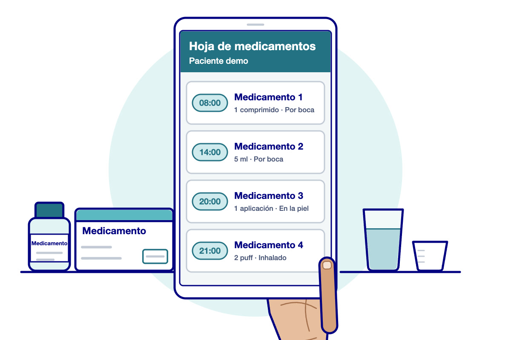

Dar medicamentos con seguridad
Qué revisar antes, cómo darlos y qué hacer si algo sale distinto
Lo esencial
- Antes de cada dosis, revisa la hoja o registro de medicamentos en la plataforma RegisCare. Lo que no está ahí, no se da.
- Si algo no coincide con la hoja o registro (el medicamento, la dosis, el envase), no lo des y avisa al equipo.
- Prepara una dosis a la vez, desde su envase original, justo antes de darla.
- Registra después de dar el medicamento, nunca antes.
- Si olvidaste una dosis, no des el doble. Si te equivocaste, avisa de inmediato: nunca lo ocultes.
- Ante una emergencia, llama al 131. ProSalCare no es un servicio de urgencia.
Video del módulo: 5 minutos, con subtítulos.
La hoja o registro de medicamentos manda

La hoja o registro de medicamentos es la lista vigente de lo que toma la persona: nombre, dosis, vía, horario y observaciones. No es un papel: está en la plataforma RegisCare, en tu vista de cuidador. La mantiene al día tu enfermera o enfermero, según lo que indica el médico tratante.
- Revísala antes de cada dosis. Ningún medicamento se da de memoria ni por costumbre.
- Si hay una receta o indicación nueva (un control médico, un alta del hospital), avisa al equipo antes de dar la primera dosis, para que la ingresen a la hoja.
Antes de dar: siete cosas correctas
| Revisa que… | |
|---|---|
| 1. La persona | La dosis es para ella y corresponde a su hoja o registro de medicamentos |
| 2. El medicamento | El nombre del envase es el mismo que el de la hoja. Cuidado con los nombres parecidos |
| 3. La dosis | La cantidad que preparaste es la que dice la hoja |
| 4. La vía | Se da por donde dice la hoja (por boca, en la piel, inhalado…) y tienes lo necesario |
| 5. La hora | Es el horario que indica la hoja |
| 6. El registro | Tienes RegisCare a mano para anotarlo apenas termines |
| 7. El efecto | Sabes para qué es y qué señales debes vigilar |
Cuándo no dar un medicamento
No lo des, y avisa al equipo, si:
- No está en la hoja o registro de medicamentos, o algo no coincide con ella.
- El envase está vencido, dañado o mal conservado.
- La persona no puede tragar bien o está muy adormilada o confundida, y el medicamento es por boca.
- Tiene una alergia conocida a ese medicamento.
- La persona no quiere tomarlo. No se lo des: anótalo y avisa.
Preparar la dosis
- Lávate las manos, como en el módulo de lavado de manos.
- Usa una superficie limpia y con buena luz.
- Revisa el envase: nombre, dosis, vía, fecha de vencimiento y que esté en buen estado.
- Lee la etiqueta completa antes de sacar nada. Si puedes, en voz alta.
- Saca solo la dosis que toca, desde el envase original, justo antes de darla.
- Si la dosis no calza con la presentación (por ejemplo, medio comprimido) y tienes cualquier duda, no la des y consulta.
- No dejes dosis preparadas con anticipación ni cambies los medicamentos a otros envases.
- No uses pastilleros ni cajas organizadoras. El orden de las dosis está en la hoja o registro de RegisCare y sus recordatorios.
- No tritures comprimidos de liberación prolongada o retardada, ni los que tienen cubierta especial para el estómago, salvo que el médico tratante lo haya autorizado.
Dar un medicamento por boca
- Ayuda a la persona a quedar sentada o semisentada.
- Comprueba que puede tragar. Si no puede, o está muy adormilada, no se lo des y avisa.
- Entrégale el medicamento en un vaso o una jeringa dosificadora, con agua suficiente.
- Confirma que lo tragó antes de alejarte.
- Regístralo en RegisCare apenas termines: nunca antes de darlo.
- Guarda el envase en su lugar.
Si no es por boca
Tu enfermera o enfermero te mostrará la técnica y te pedirá que la repitas antes de que lo hagas a solas.
- Mira la zona donde vas a aplicar.
- Si corresponde, límpiala suavemente con suero fisiológico.
- Aplica la cantidad indicada, con las manos limpias.
- Parches: saca el anterior antes de poner el nuevo, cambia el lugar donde lo pegas y anota la fecha y la hora del cambio.
- La persona sentada, con la cabeza levemente hacia atrás.
- Inhalador: úsalo con aerocámara, agítalo antes de cada puff y espera 30 a 60 segundos entre un puff y otro.
- Nebulización: prepara la dilución tal como está indicada, ajusta bien la mascarilla y mantenla 5 a 15 minutos.
- Si el medicamento es un corticoide inhalado, que la persona se enjuague la boca al terminar.
Después de darlo
- Observa cómo responde la persona.
- Con la primera dosis de un medicamento nuevo, quédate cerca 5 a 15 minutos.
Si olvidaste una dosis o te equivocaste
| Qué pasó | Qué hacer |
|---|---|
| Olvidaste una dosis o te atrasaste | No des el doble. Avisa al equipo y sigue su indicación |
| Te equivocaste de medicamento, de dosis o de vía, aunque parezca leve | Avisa de inmediato. Nunca lo ocultes: saberlo a tiempo protege a la persona |
| Alguien tomó un medicamento por error (un niño, la misma persona) | Llama al CITUC: 22 247 3600. Si hay riesgo vital, 131. Después, avisa a tu equipo |
Guardar los medicamentos
- Siempre en su envase original, con su etiqueta, fecha de vencimiento y folleto.
- En un lugar fresco (15 a 25 °C), seco y protegido de la luz.
- Fuera del alcance de niños y de adultos con problemas de memoria o confusión.
- Los que van refrigerados (2 a 8 °C), como las insulinas: idealmente en un compartimento separado de los alimentos.
- Los vencidos o suspendidos: sepáralos para no usarlos por error y avisa al equipo. No los botes por tu cuenta; se devuelven a la farmacia o al centro de salud.
No des medicamentos por tu cuenta ni suspendas un tratamiento sin indicación del médico tratante.
Cuándo pedir ayuda
ProSalCare no es un servicio de urgencia. Si la persona está en riesgo, llama al 131 o llévala a un servicio de urgencia. Si en ese momento no hay una TENS de ProSalCare de turno en tu casa, la primera respuesta depende de ti y de los servicios de urgencia. Avisar a tu equipo sirve para que tu enfermera o enfermero lo sepa y lo considere en el plan de cuidados; no reemplaza la atención de urgencia.
Llama al 131 si después de una dosis la persona tiene alguna de estas señales. Después, avisa a tu equipo:
- Dificultad para respirar o silbido al respirar.
- Hinchazón de la cara, los labios, la lengua o la garganta.
- Ronchas, manchas o picazón intensa.
- Dolor de pecho o palpitaciones nuevas.
- Mareo intenso, sudor frío o pérdida de conciencia.
- Sangrado que no se detiene (nariz, encías, orina, deposiciones), sobre todo si toma anticoagulantes.
- Temblor, sudor frío, hambre repentina o confusión.
- Mucho sueño, confusión o agitación que antes no tenía.
- Vómitos o diarrea intensos.
Avisa a tu equipo cuando:
- Te equivocaste de medicamento, dosis o vía, aunque parezca leve.
- Olvidaste una dosis.
- El medicamento se ve distinto del habitual.
- Se está acabando algún medicamento.
Comprueba lo que aprendiste
Si eres TENS
Además de lo anterior
- Solo administras lo indicado por el médico tratante y registrado en la hoja de medicamentos. No prescribes, no modificas dosis, no suspendes y no transcribes recetas a la hoja. Ante duda o discrepancia: no administrar, reportar a la enfermera gestora y registrar.
- Hora: ventana de ± 60 minutos. Levodopa, insulinas y antibióticos mantienen horario estricto. Fuera de la ventana: registra el atraso; si se superpone con la dosis siguiente, no dupliques y reporta.
- Vigilancia: permanece 5 a 15 minutos tras la primera dosis de un fármaco nuevo, tras medicamentos de alto riesgo y tras toda administración endovenosa.
- Alergias y duplicidades: contrasta con lo registrado en EINCARE y RegisCare. Atención reforzada con nombres parecidos (LASA) y medicamentos de alto riesgo (insulinas, anticoagulantes, opioides).
- En cada turno verifica stock, vencimientos, integridad y conservación, y revisa con la familia las dosis, olvidos y rechazos del período entre turnos. Reporta stock crítico y olvidos repetidos.
- Otras vías (sublingual, subcutánea, intramuscular, enteral por sonda, rectal, endovenosa en programas con indicación específica): sigue los pasos por vía del anexo del protocolo y el EPP que corresponde.
- Error o reacción adversa: con compromiso del paciente, protocolo de rescate PSC-PROT-005 y 131 si hay riesgo vital. Todo error, con o sin daño, va a AlertaCARE, a la enfermera gestora, al médico tratante y a la familia.
Basado en el protocolo institucional PSC-PROT-010, Administración de Medicamentos en Domicilio, versión 0.0, iteración 2026-09. Módulo elaborado por ProSalCare; borrador del 14 de noviembre de 2026. Este material acompaña la enseñanza de tu equipo y no la reemplaza.